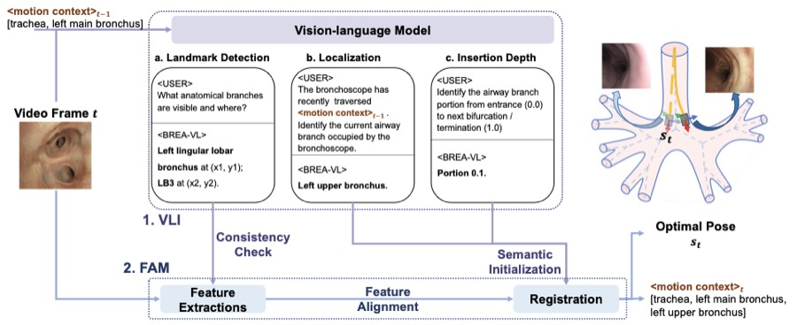
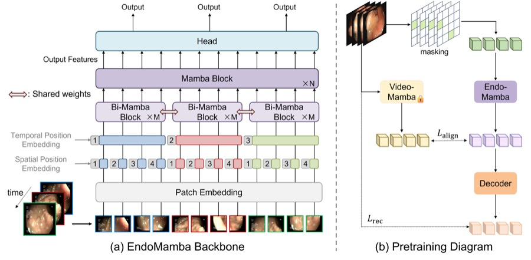
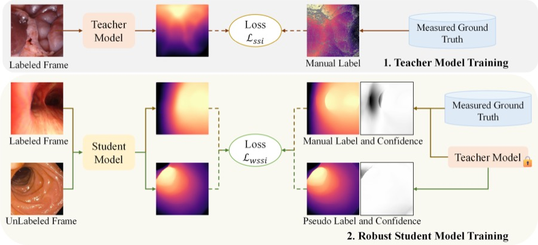
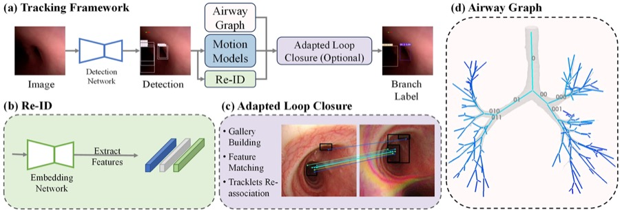
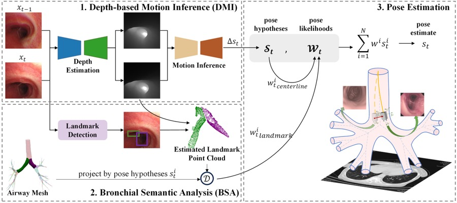

Geometry-Aware Bronchoscopy Navigation
I began with developing bronchoscopy localization methods to connect endoscopic observations with pre-operative airway structure.
I received my Ph.D. from the Institute of Automation, Chinese Academy of Sciences (CASIA) in June 2026, advised by Professor Hongbin Liu. My research focuses on AI for healthcare, medical imaging, and foundation models, with recent work on bronchoscopy localization, endoscopic depth estimation, and robot-assisted surgery.
I am interested in building reliable learning systems that connect medical visual perception, clinical navigation, and deployable intelligent healthcare tools.
I began with developing bronchoscopy localization methods to connect endoscopic observations with pre-operative airway structure.
I moved toward foundation models that transfer across patients, datasets, and clinical environments for endoscopy-related clinical support.
My recent research explores vision-language systems that can support more reliable interventional healthcare workflows.
CASIA
Developed image and video analysis methods for endoscopy-related clinical support, including airway scene understanding, depth estimation, and bronchoscopy localization to help identify the position of the bronchoscope within the airway and support airway examination during clinical procedures.
Ph.D. in Control Theory and Control Engineering
B.E. in Automation

arXiv preprint arXiv:2601.03713
Snapshot: Builds a hybrid localization pipeline that turns airway anatomy and motion history into language prompts for landmark detection, branch localization, and insertion-depth reasoning, then combines those semantic cues with feature registration for 6-DoF pose estimation.

International Conference on Medical Image Computing and Computer-Assisted Intervention Oral
Snapshot: Designs a real-time endoscopic video backbone with bidirectional Mamba blocks for frame-level spatial modeling and temporal Mamba reasoning for online streams, then pretrains it with masked reconstruction and feature alignment for reusable surgical video representations.

arXiv preprint arXiv:2409.05442
Snapshot: Trains a depth foundation model for endoscopy with a teacher-student self-learning pipeline that estimates confidence in noisy labels and down-weights unreliable pixels through a weighted scale-and-shift invariant loss.

IEEE Transactions on Medical Imaging 44 (3), 1321-1333
Snapshot: Introduces multi-object tracking of airway lumens to maintain temporal identity through fast camera motion, then associates tracked detections with a semantic airway graph for branch-level localization without patient-specific retraining.

International Conference on Medical Image Computing and Computer-Assisted Intervention
Snapshot: Frames bronchoscope localization as probabilistic pose estimation, propagating pose hypotheses with depth-based motion inference and scoring them with bronchial semantic analysis to improve robustness in visually ambiguous branches.
arXiv preprint arXiv:2601.03713
MICCAI CREATE 2025, 127
arXiv preprint arXiv:2508.05205
IEEE Transactions on Medical Imaging 44 (3), 1321-1333
2024 IEEE/RSJ International Conference on Intelligent Robots and Systems Oral
International Conference on Medical Image Computing and Computer-Assisted Intervention
2024 IEEE/RSJ International Conference on Intelligent Robots and Systems
CoRR
ICRA 2024 Workshop on C4SR+
MICCAI 2026, IROS 2026
IEEE Transactions on Medical Imaging (TMI), IEEE Transactions on Pattern Analysis and Machine Intelligence (TPAMI)